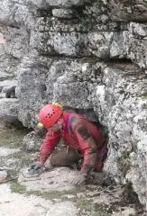
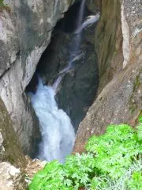

Maraş'tayız
 7 Nisan Perşembe
7 Nisan Perşembe
Yine Maraş'dayız ve yine Döngel Köyü'nde Karadaş'ların misafiriyiz. 4 gün boyunca Tekir civarında geçen seneden yarım kalan işlerimizi tamamlayacağız, ihbarları değerlendireceğiz.
Bugün İstanbul'dan vardığımız gibi doğru Kurucaova'daki Cincin İnliği'ni döşemeye başladık. Daha doğrusu Sebahat döşemeye başladı. Geçen sene ulaştığımız son noktaya ulaşıp, 15 metrelik bir iniş daha döşedikten sonra, hızını alamayıp dipteki daralı da boylu boyuna çamurlu suya yatarak zorladıysa da daral geçit vermedi. Sonra ölçümlerimizi alarak mağarayı topladık. Toplam derinlik 60 m gibi.
Bu arada Ali ve Emine yüzey taraması yapıp bir kaç yeni mağara tespit edip ihbar aldılar. Yarın buldukları küçük bir düdene iniş yapacağız.

Sabahtan Ali ile Emine'nin dün tespit ettiği çok da ümit vermeyen bir obruğa baktık. Yaklaşık 8 metrelik inişi yapan Sebahat, bir kaç istasyonluk ölçümleri de tek başına aldı.
Arkasından, toprak düdene batan kuvvetli bir suyun hemen devamındaki dolinin dibindeki kayalıkta uğraştık. Aşağıda gürül gürül akan suyun sesini duymamıza rağmen çökme kayalar arasından bir ulaşım yolu bulamadık.
Sonra Kurucaova Köyü'nde küçük bir tepeliğin üzerinde daha önce tespit ettiğimiz dikey bir mağaraya giriş yaptık. Sebahat ile Murat'ın ölçümlerini yaptığı mağara iki küçük inişten oluşuyordu. Mağaranın dibinden köyün defineci gençlerinin urganları çıkaraılıp kendilerine takdim edildi.
Son olarak uzun bir yürüyüşle ulaştığımız Kefenli Mağarası, beklentilerimizden çok daha ciddi çıktı. Kuvvetli meyilli ama teknik malzemesiz ilerlenebilen bir aktif galeride 100 m ölçüm aldıktan sonra ulaştığımız 10 metrelik biri inişin başından döndük. Bu mağaranın devamı muhtemelen bir başka geziye kalacak.

Meteorolojinin karamsar tahminlerine inat, programı iptal etmeyip geldiğimiz Maraş'ta iki pırıl pırıl gün geçirdikten sonra bugün sağnak yağmur başladı. Yine de boş geçirmedik günümüzü. Sabahtan Ali, Emine ve Sebahat Döngel Köyü'nün yukarısında eksik kalmış son bir kaç küçük mağarayı daha ölçtüler ve ihtişamlı Yukarı Döngel Mağarası'ndaki etkileyici şelaleyi bir de suyun fazla olduğu zamanda görüntüleme imkânı elde ettiler. Suyun büyük kısmını hemen yanıbaşındaki HES'in çaldığını ve bunun sadece HES'den artakalan su miktarı olduğunu düşününce mağaranın eski halinin ihtişamını hayal etmek bile zor.
Arkasından Fırnız tarafına geçtik ve bir miktar yüzey araştırması yaptıysak da başlayan yağmur neticesinde kısa kesmek zorunda kaldık. Yarın yine bölge değiştirip dönüş yolu üzerinde Pazarcık bölgesini çalışacağız.
10 Nisan Pazar
Uçağımız akşam ve Gaziantep'ten. Sabah, Karadaş ailesine veda edip yola koyulduk. Maraş'tan Gaziantep'e dönerken yan yola girip Pazarcık ilçesi yakınlarında ve Nurhak Dağları'nın güney yamaçlarında iki vadiye göz attık. Çetindere Vadisi'nden pek birşey çıkmadıysa da Ardıl Boğazı inanılmaz. Tümüyle yatay kalker plakalarından oluşmuş, 4 km uzunluğundaki bu vadinin her yanı delik deşik. Bize, köye yakın iki mağara bildirdiler. İlk mağaranın ağzı malzemeli tırmanış gerektirdiği için sonraya bırakıldı, ikinci ve ufak olan mağara ise ölçüldü.